Descend into the Dark
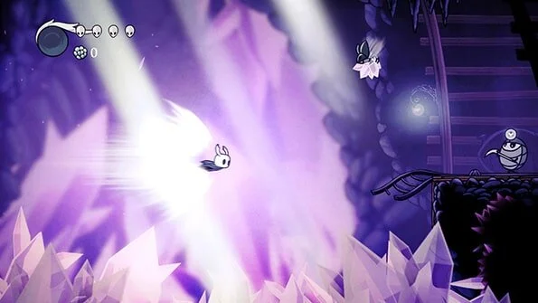
Brave the Depths of a Forgotten Kingdom
Beneath the fading town of Dirtmouth sleeps a vast, ancient kingdom. Many are drawn beneath the surface, searching for riches, or glory, or answers to old secrets.
As the enigmatic Knight, you’ll traverse the depths, unravel its mysteries and conquer its evils
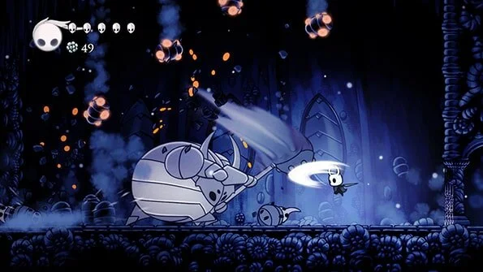
Use Your Skills and Reflexes to Survive
Hollow Knight is a challenging 2D action-adventure. You’ll explore twisting caverns, battle tainted creatures and escape intricate traps, all to solve an ancient long-hidden mystery.
- Explore vast, interconnected worlds
- Encounter a bizarre collection of friends and foes
- Evolve with powerful new skills and abilities
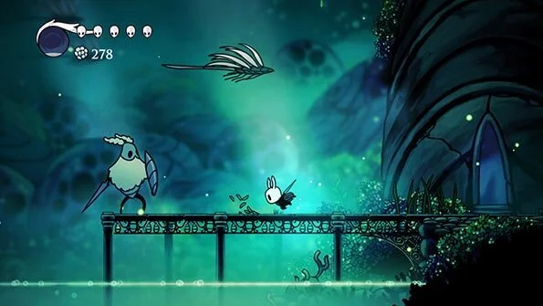
Evocative Hand-Drawn Art
The world of Hollow Knight is brought to life in vivid, moody detail, its caverns alive with bizarre and terrifying creatures, each animated by hand in a traditional 2D style.
Every new area you’ll discover is beautifully unique and strange, teeming with new creatures and characters to discover. The world of Hollow Knight is one worth exploring just to take in the sights and discover new wonders hidden off of the beaten path.
Hollow Knight Expands with 4 Giant Free Content Packs
Hidden Dreams
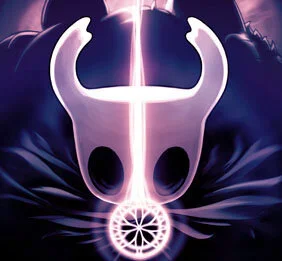
Mighty new foes emerge! New Boss fights. New Upgrades. New Music.
The Grimm Troupe
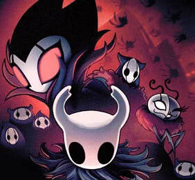
Light the Nightmare Lantern. Summon the Troupe. New Major Quest. New Boss Fights. New Charms. New Enemies. New Friends.
Lifeblood
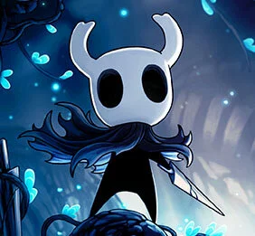
A Kingdom Upgraded! New Boss. Upgraded Bosses. Tweaks and Refinements across
Godmaster
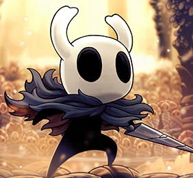
Take your place amongst the Gods. New Characters and Quest. New Boss Fights. Epic New Music!
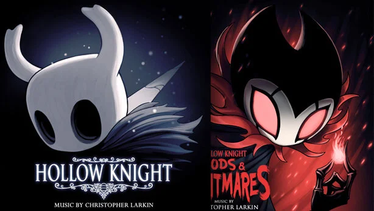
A Haunting, Orchestral Score
Composed and produced by Christopher Larkin, Hollow Knight’s epic score is woven throughout the game, echoing the sadness of a majestic civilisation brought to ruin.
Visit our Friends
Plush Grubs! Plush Knights! Rad Tees and so much more!
Classy Tees! Stylish Pins! The coolest, friendliest yetee we know
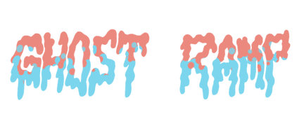
Limited Vinyl Releases
Press Coverage
.webp)
Praise for Hollow Knight
“It's a deep dive into a dark place, and a brilliantly rich experience.”
- 9/10 Game Informer
“Truly a masterpiece of gaming if there ever was one, and certainly art worthy of being in a museum.”
- 10/10 Destructoid
“Best Platformer 2017 - The joy of Hollow Knight is the joy of discovery, always hard-earned, never handed to you.”
- 92/100 PC Gamer
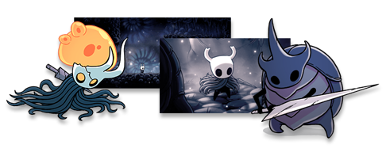
If you'd like to write about Hollow Knight, we've a Press Kit full of videos, facts and images.
For any additional press enquiries, please contact: press (at) teamcherry.com.au
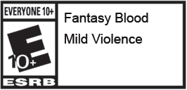
Hollow Knight is being developed by Team Cherry in Adelaide, South Australia. We're a team of 3 people who, alongside making the game, are responsible for building these websites, cutting those game trailers, posting regular game updates, answering questions on social media and much more. Though it's a lot of work, we love doing it, and it's made even more enjoyable by the enthusiastic support we've received from fans this whole way
Ari Gibson
Ari is responsible for game design alongside William. He creates the game's art, environments and animates hundreds of bugs.
William Pellen
William designs the game along with Ari. He creates the enemy, boss and game behaviour for Hollow Knight. If an enemy seems too challenging or a gauntlet insurmountable, blame him!
David Kazi
Dave was responsible for Hollow Knight's technical direction. He divided his time between making the game run and fixing things that Ari and William broke.